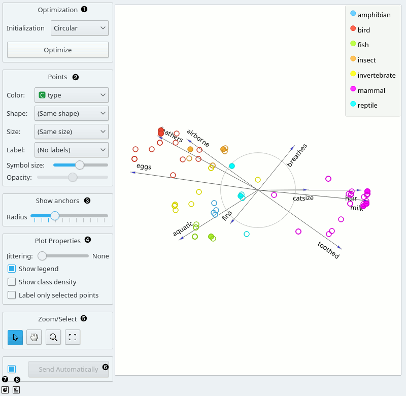
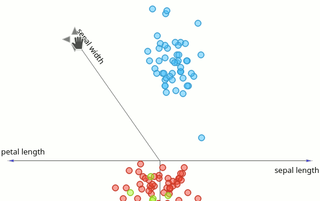
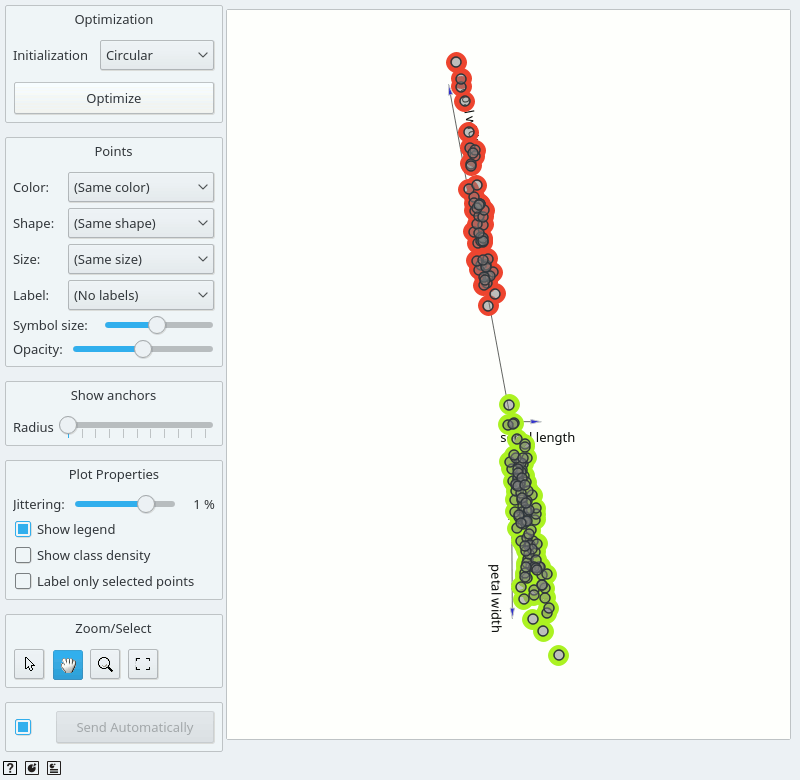
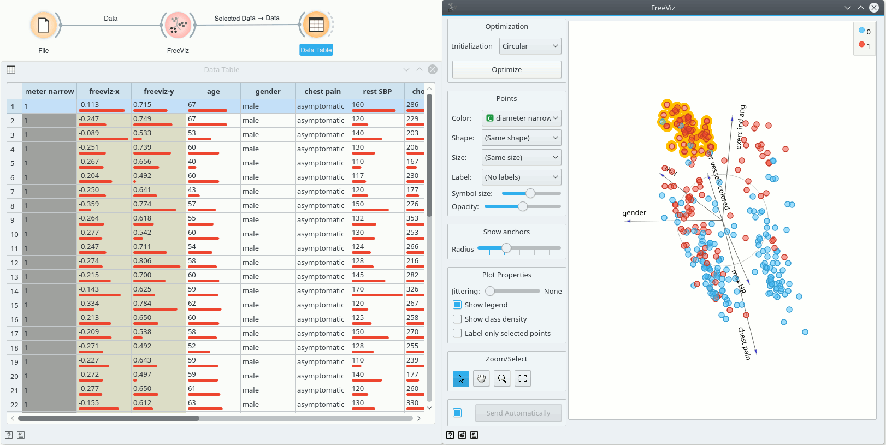

FreeViz
Displays FreeViz projection.
Inputs
- Data: input dataset
- Data Subset: subset of instances
Outputs
- Selected Data: instances selected from the plot
- Data: data with an additional column showing whether a point is selected
- Components: FreeViz vectors
FreeViz uses a paradigm borrowed from particle physics: points in the same class attract each other, those from different class repel each other, and the resulting forces are exerted on the anchors of the attributes, that is, on unit vectors of each of the dimensional axis. The points cannot move (are projected in the projection space), but the attribute anchors can, so the optimization process is a hill-climbing optimization where at the end the anchors are placed such that forces are in equilibrium. The button Optimize is used to invoke the optimization process. The result of the optimization may depend on the initial placement of the anchors, which can be set in a circle, arbitrary or even manually. The later also works at any stage of optimization, and we recommend to play with this option in order to understand how a change of one anchor affects the positions of the data points. In any linear projection, projections of unit vector that are very short compared to the others indicate that their associated attribute is not very informative for particular classification task. Those vectors, that is, their corresponding anchors, may be hidden from the visualization using Radius slider in Show anchors box.

- Two initial positions of anchors are possible: random and circular. Optimization moves anchors in an optimal position.
- Set the color of the displayed points (you will get colors for discrete values and grey-scale points for continuous). Set label, shape and size to differentiate between points. Set symbol size and opacity for all data points.
- Anchors inside a circle are hidden. Circle radius can be be changed using a slider.
- Adjust plot properties:
- Set jittering to prevent the dots from overlapping (especially for discrete attributes).
- Show legend displays a legend on the right. Click and drag the legend to move it.
- Show class density colors the graph by class (see the screenshot below).
- Label only selected points allows you to select individual data instances and label them.
- Select, zoom, pan and zoom to fit are the options for exploring the graph. The manual selection of data instances works as an angular/square selection tool. Double click to move the projection. Scroll in or out for zoom.
- If Send automatically is ticked, changes are communicated automatically. Alternatively, press Send.
- Save Image saves the created image to your computer in a .svg or .png format.
- Produce a report.
Manually move anchors

One can manually move anchors. Use a mouse pointer and hover above the end of an anchor. Click the left button and then you can move selected anchor where ever you want.
Selection
Selection can be used to manually defined subgroups in the data. Use Shift modifier when selecting data instances to put them into a new group. Shift + Ctrl (or Shift + Cmd on macOs) appends instances to the last group.
Signal data outputs a data table with an additional column that contains group indices.

Explorative Data Analysis
The FreeViz, as the rest of Orange widgets, supports zooming-in and out of part of the plot and a manual selection of data instances. These functions are available in the lower left corner of the widget. The default tool is Select, which selects data instances within the chosen rectangular area. Pan enables you to move the plot around the pane. With Zoom you can zoom in and out of the pane with a mouse scroll, while Reset zoom resets the visualization to its optimal size. An example of a simple schema, where we selected data instances from a rectangular region and sent them to the Data Table widget, is shown below.
